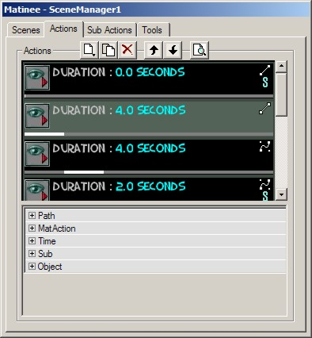
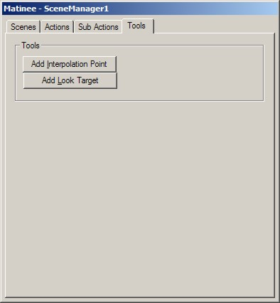

Matinee
Matinee is a tool in UT200x which allows complex camera scenes to be scripted: level fly by, scripted sequences, cinematics etc.
Notes:
- All the information here is based upon the XIIIEd. This editor uses unreal engine build 829. Things might be different in higher versions

- I found Matinee to be very crash-sensitive. So while you're learning the basics it might crash a few times. I suggest you save often

Introduction
Every level can have multiple (cut)scenes. Each scene is divided in several actions and each action can be divided in several subactions.
There are these possible actions:
- ActionPause
- This will pause the camera or actor at the interpolation point or actor you set, for the time you set.
- ActionMoveCamera
- This will move the camera/object from one interpolation point, or other actor, to another.
There are these possible subactions:
- SubActionSceneSpeed
- Speed up or slow down camera movement speed.
- SubActionGameSpeed
- Speed up or slow down game speed.
- SubActionOrientation
- Changes the camera orientation.
- SubActionFOV
- Changes the Field Of View.
- SubActionTrigger
- Triggers an Event (I can't get this to work needs a more detailed explanation from an expert)
- SubActionFade
- Fades the screen, in or out.
Simple Tutorial (flyby)
Open your level. Click the "Matinee" button in the toolbox (next to the Terrain Editing one). You'll get a new window and here is where it will all happen
While in the "Scene"-tab, click "Add new Scene". The list below will now show a scene. Select the newly created scene by clicking on that scene in the list box.
Before we can add any usefull actions we'll need some Interpolation Points in the level. This is done with the use of the last tab, called "Tools". I add Interpolation Points like this:
- Activate the 3D-view.
- Move the camera to the "starting point" of the cutscene.
- Click "Add Interpolation Point". An Interpolation Point will be added at the exact postion and orientation as the camera is right now.
- Move to the next keypoint in the cutscene.
- Click "Add Interpolation Point".
- ...
Once your Interpolation Points are in the level, you need to go to the "Actions" tab. Click "Add New Action" and you'll be given a choice between ActionPause and ActionMoveCamera. Choose ActionMoveCamera and an Action should be added to the list. If not then make sure that the scene is selected (in the Scenes-tab). Select the newly created Action. Open the "MatAction"-subsection of it's properties. Now you need to select the first Interpolation Point of your scene in a 2D-view. Once selected, select IntPoint in the Action's Properties and click Use. Seeing as this is the first Action, you don't need to change any of the other properties. Do check that the Duration (under Time) is set to 0.
Now add another ActionMoveCamera Action. In it's IntPoint property set the second Interpolation Point and a line should appear between the first Point and the second. Under Time→Duration you need to set how long it should take to go from point1 to point2. Make SURE it's set to sumtin other then 0 because otherwise the Editor will crash when you preview it. Under Path you might wanna change the PathStyle from Linear to Bezier (the line will change to a curve). This will allow you to smooth the flyby by moving the two control-points (those two big white circles) around.
Now you should continue adding new actions until every Interpolation Point you added is covered.
After that is done, you can click the "Open a Preview Window" button. Click "Play Forwards" to view your newly created flyby. If you did it all correctly 
Now if you want the cutscene to be seen ingame, you'll need to add a trigger which simply triggers the cutscene.
This explains the very basics of Matinee.
Detail
Now we'll explain everything in more detail. We'll go over each tab in great details.
Scene
Here you create every scene you'll have in your level. The buttons allow you to create a new scene, duplicate an existing scene, delete a scene and open a preview window.
In this tab you can also set some properties for each scene individually. These settings can be found in the SceneManager subsection.
|
![[matinee1]](images/matinee1.jpeg) The Scene tab |
Action
|

The Action tab |
ActionPause
ActionMoveCamera
SubAction
|
![[matinee3]](images/matinee3.jpeg) The SubAction tab |
SubActionSceneSpeed
SubActionGameSpeed
SubActionOrientation
SubActionFOV
SubActionTrigger
SubActionFade
Tools

The Tools tab |
Add Interpolation Point
If a 2D-view is active and you push this button, then an Interpolation Point will be added at the center of the view. On the other hand if the 3D-view is active and you push the button, then an Interpolation Point will be added at the exact same position and orientation as the camera is in the 3D-view.
Add LookTarget
If you want the camera to look at something which isn't really an actor, then you can use these. Simply add them where you want the camera to look at and use these actors in the LookAt-tag of the SubAction. For the addition of these actors, the same rules apply as with the Interpolation Point.
Related Topics
Discussion
ToDo
- Explain the subactions.
- Explain ActionPause.
- ...
I've found a german tutorial for another matinee-tool: http://unrealed.planet-multiplayer.de/index.php?P=tutorial&D=2-matinee-tool-1 but it's not working at all 
ProjectX: He he, whenever i add a subaction UED crashes, i think i'm public enemy #1 with the UED Goblin, lol, i have so many crashes. Also, is there a way to set it that the matinee plays when you load the level, cos when i load my level, it just starts at the player starts.
UPDATE- To cause a movie to be played at the start of the level, set the player start's event to the name of the scene.
Update for UT2003 v2225
Foxpaw: As far as I can tell, Matinee is no different in UT2003 than it was in XIIIEd, with the exception of an additional tool button that automatically adds an action for you instead of you having to add one separately after clicking add interpolation point, so the Category To Do should maybe just be changed to a Refactor Me.
Interpolation Points – is that an InterpolationPoint actor? if so, plase link – no, I meant in the actual article above! and don't pipe it – if it's the name of a class, it should appear as it does in script!
MadNad I've heard rumors that someone had this working online??? Any truth to that?
DaveA Define 'this'. Do you mean this: www.unrealroc.com ?
Category To Do – Refactor?